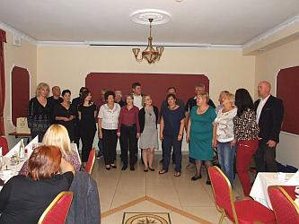

do aktualności
do aktualności2014-10-04
Na nasze zaproszenie przyjechał Chór Ziemi Zamojskiej CONTRA pod dyr. Anny Konopa-Cios.
Potrzebują kilka minut przed mszą, aby sprawdzić akustykę kościoła.
Teraz msza, którą muzycznie oprawiają nauczyciele, uczniowie i absolwenci klasy organów
Szkoły Muzycznej I stopnia im. Mjr H.H.Baranowskiego w Krakowie pod kier. Małgorzaty BAŁY.
Już chór gotowy do koncertu. Jeszcze krótka zapowiedź i …
zaczynamy koncert. Jako pierwsi występują nasi goście.
Śpiewają pięknie. Teraz wystąpią połączone 2 chóry, czyli Chór Im. Jana Pawła II ze Strumian i my, czyli Camerata pod dyr. Izabeli Szoty.
Na koniec zaśpiewały wszystkie chóry razem pod dyr. Izabeli Szoty. Koniec koncertu. Dostaliśmy gromkie brawa.
Teraz jedziemy na wspólną kolację z chórem Contra.
Na początek podziękowania i upominki.
Teraz kolacja, śpiewy w „grupach chóralnych” i nawet tańce.

Ale, ale już pełna integracja … zobaczcie.
Gitarzyści i Ewa (której nie widać) grają, chóry śpiewają.
Niestety wszystko, co dobre szybko się kończy i my też musimy kończyć spotkanie.
Ale było wesoło. Do szybkiego zobaczenia!!!
do aktualności


 Prowadzenie strony: Małgorzata Wysocka-Cebula
Prowadzenie strony: Małgorzata Wysocka-Cebula